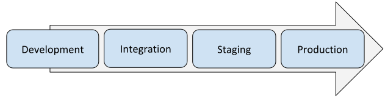

class: center, middle, main-title # Software Engineering CI and CD --- ## Before we begin - 2nd delivery --- ## Recap from DevOps lecture - Software needs to be delivered to customers faster than ever -- - Manual operations (e.g. deployment) is not really an option -- - Some of the values: - Continuous fast feedback - Determinism in delivery -- - Processes and tools are means to achieve those values -- - Some practices: - Strong version control - Automate everything (pipelines) - Zero-touch build and deploy ??? Let's talk some more about build and deploy --- ## Basic problem <br> .center[**Source code**] .center[|] .center[*????*] .center[↓] .center[**Software available to end-user**] -- <br> <br> .center[Ideally, instantly and automatically] --- ## Two main steps .center[**Source code**] .center[|] .center[*build and package*] .center[↓] .center[**Some binary artifact**] .center[|] .center[*deploy*] .center[↓] .center[**Software available to end-user**] ??? Last time we talked about build tools. Let's take it further. --- class: center, middle ### CI --- ## Continuous integration (CI) An almost universally used practice. -- - Maintain a code repository -- - Commit to baseline (main branch) often ??? - Often - ideally, multiple times per day. In any case you should not have branches that live for longer than 1-2 days. - Goal: minimize "work in progress". - Example: https://github.com/SolarDesignTool/permit-ready-pv-system-design/pulls -- - Build every commit automatically ??? - Should happen on another machine - in a deterministic environment -- - The build should be fast and self-testing ??? - If tests fail, you can not integrate your changes into the baseline. -- - Make everyone aware of the results of the latest build ??? - E.g. send email/notification that something failed. Fixing a failing build is top priority. - Physical alarms / flashing lights -- - Make the artifacts produced accessible for use, testing and deployment ??? Goals - avoid conflicts between developers, minimize work in progress. --- ## Build infrastructure - Executes builds, runs tests, performs static code analysis, etc. - Maintains status/history, and notifies developers - Can be - A dedicated server (e.g. Jenkins) - Cloud-native (e.g. GitHub Actions, GitLab CI/CD) ??? - Demo: Jenkins --- class: center, middle ### CD --- ## Continuous delivery/deployment - Expand on ideas of CI -- - Both referred to as CD -- - Continuous delivery - Every working version **can be** deployed -- - Continuous deployment - Every working version **is** deployed -- - Typically implemented as a pipeline ??? - Pipeline - a sequence of processing steps/elements, where output from one step becomes input to the next one. ??? - Demo: Deployment of some service to prod - Pipeline as code example: https://github.com/SolarDesignTool/jenkins-shared-library/blob/master/vars/microservicePipeline.groovy - Demo: https://github.com/grimsa/lt-vu-mif-grimsa-web/actions - Demo: https://github.com/grimsa/logging-permit-scraper/blob/main/.github/workflows/main.yml --- ## Deployment environments  ??? - An environment where (into which) a software artifacts are deployed - This can include - Hardware - Operating system - Any required software - Any required configuration -- - Local/Development - Developer's own environment -- - Integration/Test - Latest baseline build deployed automatically -- - Staging/Acceptance/Pre-production - Production replica for release candidate testing or production troubleshooting -- - Production/Live - Main environment with real users ??? - Typically we want multiple instances of same thing with slightly different configuration. - Sometimes we want short-lived environments. - Provisioning them automatically simplifies things. --- ## Infrastructure as code - Managing and provisioning servers through config files - Rather than physically configuring machines using interactive tools -- - Goal: save time and reduce errors -- - Enabler: apply development practices to config files - Files can be versioned, branched, reviewed, released, etc. -- - Example ([Terraform](https://github.com/terraform-providers/terraform-provider-aws/blob/master/examples/two-tier/main.tf)) ??? Example: - https://github.com/SolarDesignTool/aws-infrastructure/ - https://console.aws.amazon.com/cloudformation/home?region=us-east-1#/stacks --- ## Containers - Containers are the primary vehicle of deployment - *Docker* being the primary (underlying) runtime ??? Another thing mentioned in DevOps presentation was containers. Demo: - Dockerfile (https://github.com/SolarDesignTool/load-serving-entity-service/blob/develop/Dockerfile) - ECR and maybe ECS (https://console.aws.amazon.com/ecr/repositories/private/724586101605/load-serving-entity-repo?region=us-east-1) -- - Container benefits - Portability - Developer productivity - Low overhead -- - Deployed either on cloud container services or on your own infrastructure --- ## Some resources Introductory: - Wiki-like entry: [Continuous Integration by Martin Fowler](https://www.martinfowler.com/articles/continuousIntegration.html) - 17 min talk: [Continuous Delivery by Martin Fowler](https://www.youtube.com/watch?v=aoMfbgF2D_4) - Wiki-like entry: [Infrastructure as Code by Martin Fowler](https://www.martinfowler.com/bliki/InfrastructureAsCode.html) Deep dive: - Book: [Continuous Inegration](https://www.goodreads.com/book/show/1311542.Continuous_Integration) - Book: [Continuous Delivery](https://www.goodreads.com/book/show/8686650-continuous-delivery) --- class: middle, center # Questions?